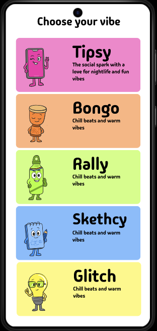
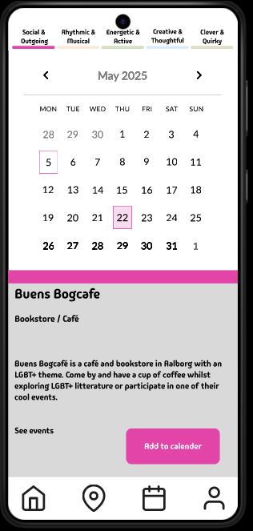
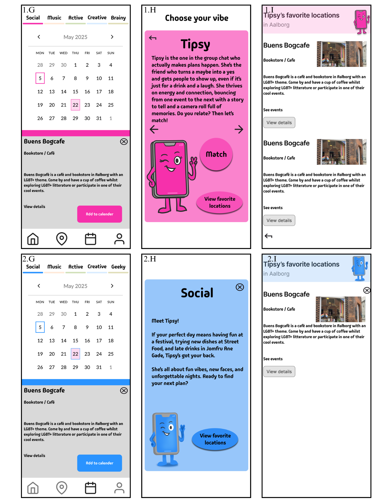
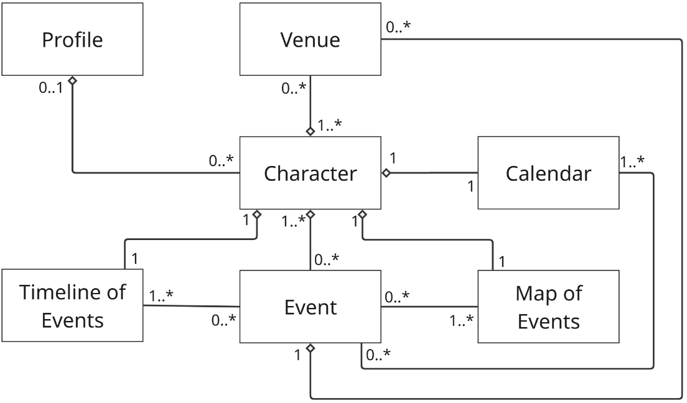

Social Engagement and Design
An iterative approach to event discovery
Role: Participatory Design Facilitator, UX/UI Designer, and Usability Evaluator
Context: 8th semester project at Aalborg University
Timeframe: Spring 2025
Description: This project tackles the social friction of relocation, designing an intelligent mobile platform that helps newcomers and university students organically discover local events matching their personal interests. For employers, it highlights an end-to-end command of mobile application development and rigorous UX methodology, translating qualitative user research and workshops into a functional product.

Solution and Conclusion
Conclusion:The initiative culminated in a T-shaped prototype Android application built in Android Studio using Java and XML, structured around an open-strict layered architecture. Guided by MoSCoW prioritization and Nielsen's heuristic evaluations, the work proves how gamified navigation and localized event matching can effectively mitigate social isolation for newcomers.
Visuals & Artifacts




